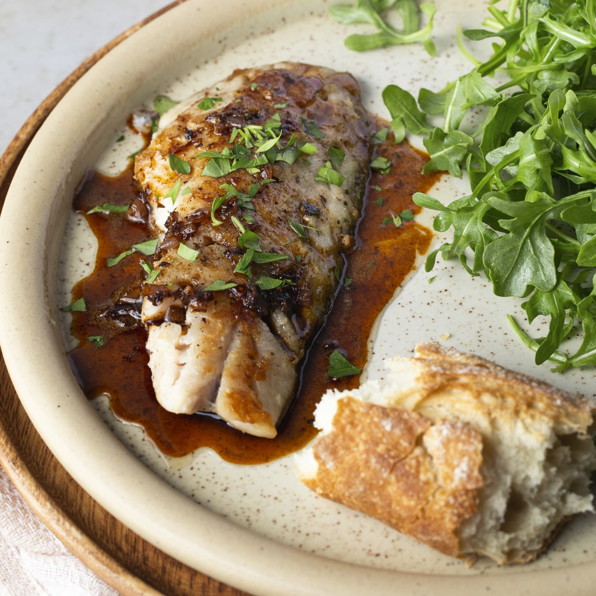

One-Dish Rockfish

One-Dish Rockfish
An easy rockfish recipe with spinach, tomatoes, and lemon made in one dish for a great tasting meal.
Ingredients
- 5 cups fresh spinach
- 2 (6 ounce) fillets rockfish
- 10 cherry tomatoes, halved
- ½ cup vegetable broth
- 2 tablespoons minced fresh dill
- ½ teaspoon lemon pepper
- ¼ teaspoon garlic powder
- ¼ teaspoon onion powder
- salt and ground black pepper to taste
- 2 slices lemon slices
- 2 slices onion slices
- 1 teaspoon butter
Steps
- Preheat the oven to 400 degrees F (200 degrees C).
- Layer spinach on the bottom of a 2-quart baking dish. Arrange rockfish on top; scatter tomatoes around rockfish. Pour in broth and season the rockfish with dill, lemon pepper, garlic powder, onion powder, salt, and pepper. Place a slice of lemon and onion on each fillet; top with butter. Cover the entire dish with aluminum foil.
- Bake in preheated oven until the fish flakes easily, 20 to 25 minutes.